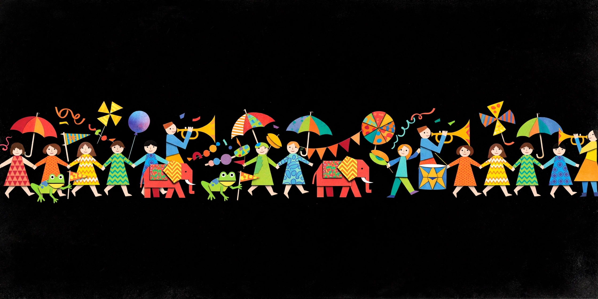

CASE-001 PERFECT BLUE /// CASE-002 DOGRA MAGRA /// CASE-003 AKIRA /// DREAM PRESSURE RISING /// DO NOT FOLLOW THE PARADE /// CASE-004 PAPRIKA /// CASE-005 LAIN /// FILE-000 NOT FOUND /// CASE-001 PERFECT BLUE /// CASE-002 DOGRA MAGRA /// CASE-003 AKIRA /// DREAM PRESSURE RISING /// DO NOT FOLLOW THE PARADE /// CASE-004 PAPRIKA /// CASE-005 LAIN /// FILE-000 NOT FOUND ///
SEC.01起源ファイル — ORIGIN
患者の嗜好の発生源として特定された3件
SEC.02症例ファイル一覧 — INDEX
全ファイル 12 件収蔵 ／ 開封 0 / 12
※ 一覧の件数が合わない場合は、あなたの側の異常として記録されます。

FIG.P — 夢の行進（監視映像より抽出）DREAM PARADE — DO NOT FOLLOW
CASE-009 INLAND EMPIRE /// CASE-010 UBIK /// CASE-011 HOUSE OF LEAVES /// CASE-012 FICCIONES /// END OF VISIBLE RECORD /// この先、戻れる保証はない /// CASE-009 INLAND EMPIRE /// CASE-010 UBIK /// CASE-011 HOUSE OF LEAVES /// CASE-012 FICCIONES /// END OF VISIBLE RECORD /// この先、戻れる保証はない ///